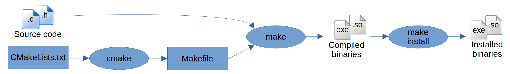

Compilation on HPC
- Author: Xavier Besseron (University of Luxembourg)
- License: ©2024 CC BY-NC-SA 4.0
- Date of practical: Tuesday 27th of February 2024
🔵 Introduction
This practical session focuses on the compilation of software in an HPC environment. Rather than relying on pre-built packages, HPC clusters often require to re-compile the software to take advantage of the hardware and software characteristics of the platform and obtain the best performance.
Objectives
This work proposes concrete examples of software compilation on HPC.
- Find the available compilers, toolchains and dependencies
- Compile software and libraries using classical build systems (e.g., Configure, CMake)
- Try different compilers and compilation options
The exercises will also refer to external documentation and instructions that need to be consulted. The aim is for you to be independent and work in 'real conditions' by finding the information you need to complete the task.
Instructions
This practical is an individual work to be carried out on the Aion cluster of the HPC platform of the University of Luxembourg.
It is composed of different elements:
- this page that contains instructions and questions;
- the GitHub Classroom repository that contains the materials for the exercises;
- the report that you have to submit via GitHub Classroom with the rest of the requested documents
Report
Together with this tutorial, you need to prepare a short report of your work:
- There is no template, you can start from a blank document. Keep it simple, clear and well-organized.
- Make sure you answer all the questions (cf below), with text, code or screenshots.
- Prepare your report at the same time you're doing the exercises.
- Submit your report as a PDF file to your GitHub Classroom repository and push it before the deadline.
Question 1: What? Who? When?
Indicate at the beginning of your report:
- the title of the practical
- your full name
- your Uni.lu HPC username
- your GitHub username
- the date
🔵 Part 0: Setup
Connection to a Compute Node
The exercises are to be carried out in interactive mode on a compute node of the Aion cluster of the University of Luxembourg.
As a reminder, here are the steps to access a compute nodes:
- Connect to the access node of the Aion cluster (cf Connection to HPC Access)
- Find your reservation, if application (cf Finding your reservation)
- Connect to a compute node (cf Connection to a compute node)
Recommended Settings
For this practical session, the following options are suggested:
- Partition:
interactive - QoS:
debug - Reservation:
hpc_software_d27during the Tuesday afternoon session - Time: 2 hours (or ending before the end of the reservation)
- Node: One compute node
- Task: One task
- Cores: 32 cores per task
Your access command line should look like this:
salloc -p interactive --qos debug --reservation=hpc_software_d27 --time=2:00:00 -N 1 -n 1 -c 32
GitHub Classroom Repository
Following the same approach as the first week practical, this practical relies on Git Classroom to distribute the extra materials and for the submission of the report.
To create your copy of the repository, follow the invitation link and accept the assignment:
Assignment link: https://classroom.github.com/a/0gg2p9aK
If you need detailed explanations, please refer to the first week's instructions for Setting up Git and downloading the materials.
🔵 Part 1: Compilers and Toolchains
From now on, it is assumed that you're connected to a compute node of the Uni.lu HPC platform.
To make sure of that, check the shell prompt: It should end with the name of the node you're connected to, for example, aion-0090.
Finding available compilers
As seen previously, module is the command allowing one explore and find software on an HPC platform.
But before that, let's check if there is a 'system' compiler already installed.
For that, we can check the usual names for compilers: cc and gcc.
Question 2: Finding system compilers
Check the commands cc and gcc:
- What is the type of these commands? What is their full path? (you can use the commands
which,type,fileand/orls -lto do that) - What is the name of these compilers? What version? (you can use the command line option
--versionto do that) - Are they the same compiler? Why?
Warning
If you already have loaded modules, clear them off with module purge to make sure you only find system compilers.
The system compiler is the one that comes packaged with the Linux distribution installed on the computing node. It is usually not used to install HPC software because it is old. Other and more recent compilers are available via the modules. Let's check them out.
To find compilers among the modules, we can proceed in different ways:
- Search by name when you already know what you're looking for. For example, in the lecture we have seen compilers
gcc,iccandclang; - Search by module class, which sometimes appears as a prefix of the module name;
- Search in the description of the module.
The search can sometimes be complicated because there is no naming convention between the HPC sites.
For example, on Uni.lu HPC, the modules are named <class>/<name>/<version>.
However, on MeluXina, the modules are named <name>/<version>.
Furthermore, the <version> part may also contain the name of the toolchain used to compile the software.
Because of that, you might need to adapt your search pattern on other sites.
Here are some concrete examples of how to find compilers on Aion:
# Overview of all modules
module overview
# Find all modules whose name contains 'compiler'
module avail compiler
# Find all modules with class 'compiler'
module -r avail '^compiler/'
# Find modules with 'compiler' in their name or description
module keyword compiler
# Find all modules that are exactly named 'GCC'
module avail '/GCC/'
# Find all modules that are exactly named 'iccifort' (for Intel compiler)
module avail '/iccifort/'
We will now focus only on the following C/C++ compilers:
| Compiler | Module Name | C Compiler Command | C++ Compiler Command | Fortran Compiler Command |
|---|---|---|---|---|
| GNU Compiler Collection (GCC) | GCC | gcc |
g++ |
gfortran |
| LVVM C, C++, Objective-C compiler | Clang | clang |
clang++ |
flang |
| Intel C, C++ & Fortran compilers | iccifort | icc |
icpc |
ifort |
| AMD Optimized C/C++ & Fortran compilers (AOCC) | AOCC | clang |
clang++ |
flang |
Question 3: Finding compiler modules
For each of the compilers in the table above, find them on the Aion cluster and write down:
- the full module name, with class-name-version;
- the full path of the C compiler;
- the version returned by the C compiler executable (use the
--versioncommand line option).
Finding available toolchains
A compiler toolchain (or toolchain for short) is a set of software, tools and libraries, that are commonly used together to build applications. It typically consists of one or more compilers (for C, C++ and Fortran), an MPI library and an optimized linear algebra library implementing the BLAS/LAPACK interface.
The software stack on the Uni.lu HPC platform is installed using EasyBuild (to be introduced in the coming weeks) and in consequence, the toolchains available on Aion are a subset of the ones defined by EasyBuild.
Currently, on Aion, we find the compilers and toolchains as defined in this diagram. At the top level, we find two toolchains:
foss(current version2020bon Uni.lu HPC) based on free and open-source software;intel(current version2020bon Uni.lu HPC) based on Intel software.
graph LR
A[GCCCore] --> |binutils| B[GCC];
A --> |binutils| C[iccifort]
B --> |OpenMPI| E[gompi];
C --> |"Intel MPI (impi)"| F[iimpi];
E --> |OpenBLAS + FFTW + ScaLAPACK| G[foss];
F --> |"Intel MLK (imkl)"| H[intel];Newer toolchain definitions in EasyBuild
EasyBuild has redefined its toolchains in its recent versions (not yet available on Uni.lu HPC). You can find more details in the documentation.
Same as before for the compilers, you can find and use the toolchains using the module command:
# List the modules of the 'toolchain' class
module avail 'toolchain/'
Question 4: Finding toolchains
List the main components of the main toolchains:
- For
toolchain/foss/2020b: the module name and version of the compiler, MPI, BLAS, LAPACK and FFTW; - For
toolchain/intel/2020b: the module name and version of the compiler, MPI, and MKL.
You can either use module show to inspect a module. Alternatively, you can load the module and use module list to display the loaded modules.
🔵 Part 2: Hello World!
In this part, let's do a simple compilation of "Hello World!" programs using the FOSS toolchain foss/2020b.
Two sample programs are available in the hello_world directory of your GitHub classroom repository:
hello.cpp: a pure C++ program;hello_mpi.cpp: a C++ program using MPI.
To compile and use these programs, follow these steps:
- Load the
toolchain/foss/2020btoolchain - Compile
hello.cppinto the executablehellousing the appropriate C++ compiler - Execute the
helloprogram - Compile
hello_mpi.cppinto the executablehello_mpiusing the appropriate C++ MPI compiler (cf the lecture) - Execute the
hello_mpiprogram
Errors?
- Error
undefined reference to 'std::cout': make sure you're using a C++ compiler - Error
undefined reference to 'MPI_Init': make sure you're using a MPI compiler - Error
bash: hello: command not found: run the executable with./helloexplicitely
Question 5: Compiling HelloWorld! with foss toolchain
Compile the "Hello World!" program with the FOSS toolchain: Follow the five steps above and add a screenshot to your report 📸
The screenshot must show the input command lines and the output of the five steps, without errors.
Now, let's try again the compilation of the "Hello World!" programs with the Intel toolchain intel/2020b.
Adapt the five steps above to use the Intel toolchain and compilers. Make sure to clear all the loaded modules with module purge first.
Question 6: Compiling HelloWorld! with intel toolchain
Compile the "Hello World!" program with the Intel toolchain: Adapt the five steps above and add a screenshot to your report 📸
The screenshot must show the input command lines and the output of the five steps, without errors.
🔵 Part 3: Compilation of the GNU MPFR Library
The GNU MPFR library stands for Multiple Precision Floating-Point Reliable library and is a portable C library for arbitrary-precision binary floating-point computation with correct rounding, based on the GNU Multi-Precision (GMP) library. It is used in many scientific software, including Maple, GNU Octave or the Julia language.
The build system of MPFR is based on the Autotools with a classical configure-make-make install workflow with a configure script.
For this part, your task is to compile and install the latest version of the library (currently 4.2.1) with the following settings:
- use the native processor architecture of the Aion cluster and optimization level 3;
- generate thread-safe code.
Additional Information
Minimal guidance is provided for you to complete this exercise, but keep in mind this information:
- MPFR is a C library, hence you will need to load a C compiler (GCC recommended).
- It also depends on the GMP library: use the one available in the modules.
- The source code can be downloaded from the Download Page. Use
wget '<link>'to download from the command line directly on the compute node. - Use the
tarcommand to extract the source code, for example,tar -xzf mpfr-4.2.1.tar.gz(more help online, for example here). - MPFR is based on Autotools, so you will need to run the
configurescript to configure the build. Check also the Installation Instructions from the website. - You can set the optimization level and target architecture using the appropriate environment variable (as explained in the lecture).
- Options for the thread-safe build and the GMP dependency can be found with the
--helpofconfigure. - Install the library somewhere appropriate in your home directory, for example, a sub-directory dedicated to this practical.
The installation procedure can follow this pattern:
# Use a dedicated work directory
mkdir mpfr ; cd mpfr
# Download the source code
wget '<link>'
# Extract the source code
tar -xzf mpfr-4.2.1.tar.gz
# Create a build directory
mkdir build ; cd build
# Load the required modules
module load '<module names ...>'
# Set the environment variables for the compilation options
export '<VARIABLE>'='<options>'
# Configure the build
# - set the install path
# - set the configure option
'<configure command line with options>'
# Build the library (and save output)
make -j 8 |& tee build.log
# Install the library (and save output)
make install |& tee install.log
What is command |& tee file.log?
This syntax executes command, displays its output in the terminal and, at the same time, saves it to file.log.
In more details, we have:
commandto execute the command;|&is a shell pipe to redirect both the standart output and the error output (the usual pipe|only uses the standard output);teeis a small program that takes its input (coming from the pipe in this context) to displays it to the terminal and save it to a file;file.logis the parameter of theteecommand indicating to which file the output should be saved.
Question 7: Installation procedure for the MPFR library
Fill the missing holes in the installation procedure for the MPFR library:
- write down the complete working installation procedure in your report
- add the files
config.log,build.logandinstall.log(and only these files) to your GitHub classroom repository in thempfrdirectory
🔵 Part 4: Compilation of the preCICE library
The preCICE library is an open-source coupling library for partitioned multi-physics simulations. It is designed to facilitate the coupling of independent simulation software components. It's particularly useful for multi-physics simulations, allowing programs specializing in different aspects (like fluid dynamics or structural analysis) to communicate and exchange data for a more comprehensive simulation.

The build system of preCICE is based on CMake with a classical cmake-build-install workflow. For this part, your task is to compile and install the latest version of the library (currently 3.0.0) with the following settings:
- use the native processor architecture of the Aion cluster and the Release build type;
- make sure the following options are enabled:
- MPI communication
- Python actions
- PETSc mapping
- C bindings
- Fortran bindings
Additional Information
Minimal guidance is provided for you to complete this exercise, but keep in mind this information:
- preCICE is a C++ library with C and Fortran bindings, hence you will need to load a C, C++ and Fortran compilers (GCC recommended).
- preCICE has many dependencies. Make sure to load the appropriate modules.
- The source code can be downloaded from the GitHub release page of the project. Use
wget '<link>'to download from the command line directly on the compute node. - Use the
tarcommand to extract the source code, for example,tar -xzf v3.0.0.tar.gz(more help online, for example here). - preCICE is based on CMake, so you will need to run the
cmakecommand to configure the build. Check also the Installation Instructions from the website. - You can set the target architecture using the appropriate environment variable (as explained in the lecture).
- You can set the build type using the standard CMake option (as explained in the lecture).
- Check the Installation Instructions to set the required build options.
- Install the library somewhere appropriate in your home directory, for example, a sub-directory dedicated to this practical.
The installation procedure can follow this pattern:
# Use a dedicated work directory
mkdir precice ; cd precice
# Download the source code
wget '<link>'
# Extract the source code
tar -xzf v3.0.0.tar.gz
# Create a build directory
mkdir build ; cd build
# Load the required modules
module load '<module names ...>'
# Set the environment variables for the compilation options
export '<VARIABLE>'='<options>'
# Configure the build
# - set the install path
# - set the build type
# - set the cmake option to enable MPI communications, Python actions, PETSc mapping, C and Fortran bindings
'<cmake command line with options>' |& tee cmake.log
# Build the library (and save output)
make -j 16 |& tee build.log
# Install the library (and save output)
make install |& tee install.log
Question 8: Installation procedure for the preCICE library
Fill the missing holes in the installation procedure for the preCICE library:
- write down the complete working installation procedure in your report
- add the files
cmake.log,build.logandinstall.log(and only these files) to your GitHub classroom repository in theprecicedirectory
🔵 Part 5: Compilation of HPL
HPL is a software package that solves a (random) dense linear system in double precision (64 bits) arithmetic on distributed-memory computers. It can thus be regarded as a portable as well as freely available implementation of the High-Performance Computing Linpack Benchmark.
The Linpack Benchmark measures the floating-point computing power and it is used to rank the world's most powerful supercomputers in the TOP500 list.
The build system of HPC relies on an ad-hoc Makefile.
The configuration is done by creating and editing a Make.<arch> file that contains the settings specific to the HPC system.
For this part, your task is to compile and run the latest HPL benchmark (currently 2.3) with Intel toolchain. To achieve this, follow these instructions:
- Download the HPL archive and extract it
- Go to the
hpl-2.3directory (called the top-level directory) - Copy the example configuration file
setup/Make.Linux_Intel64to the top-level directory with the new nameMake.Aion_Intel64 - In the new
Make.Aion_Intel64file, edit the following settings:- Set variable
ARCHtoAion_Intel64 - Set variable
TOPdirto the path to your top-level directory - Set variable
OMP_DEFSto-qopenmp - Add
-xHostto the variableCCFLAGS
- Set variable
- Load the Intel toolchain
toolchain/intel/2020b - Compile HPL with
make arch=Aion_Intel64
If the compilation is successful, you will find an executable called xhpl in the bin/Aion_Intel64 directory. To execute a short test of HPL, follow these steps:
- Go to the
bin/Aion_Intel64directory - Run
srun -n 4 ./xhpl
Question 9: Compilation and execution of HPL
Compile and run HPL with the instructions above.
- add the configuration file
Make.Aion_Intel64in thehpldirectory of your GitHub classroom repository - save the output of the HPL execution and add it to the
hpldirectory your GitHub classroom repository
🔵 Report submission
Don't forget to add and push all the required files to your GitHub Classroom repository:
- the log files of questions 7, 8 and 9;
- the report, including the answers to all the questions and the screenshots.
Don't add any other files and directories (for example, build directories, executables, Makefile, etc.).
Finalize your report and save it as a PDF (no other format allowed!) in the report sub-directory of your GitHub Classroom repository.
Uploading your report
You don't need to copy it to the HPC to upload your report. Instead, you can use the Add file button directly on the GitHub webpage.
Files Submission
Your files and report are considered submitted once they are pushed to your repository.
Check your GitHub repository online to make sure: https://github.com/MHPC-HPCSoftwareEnvironment/w02-compilation-on-hpc-XXX
Passed the deadline at 03/03/2024 23h59 you won't be able to push anymore.
🔵 Additional Resources
On HPC Wiki:
Build software with CMake
- Building with CMake
- An Introduction to Modern CMake: Running CMake
- CMake FAQ: Running CMake
- How to Build a CMake-Based Project
Build software with Autotools (configure)
Compilation with a Makefile